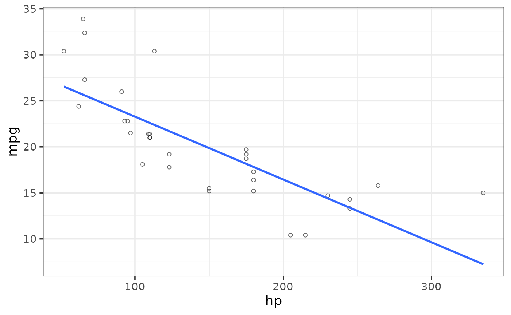
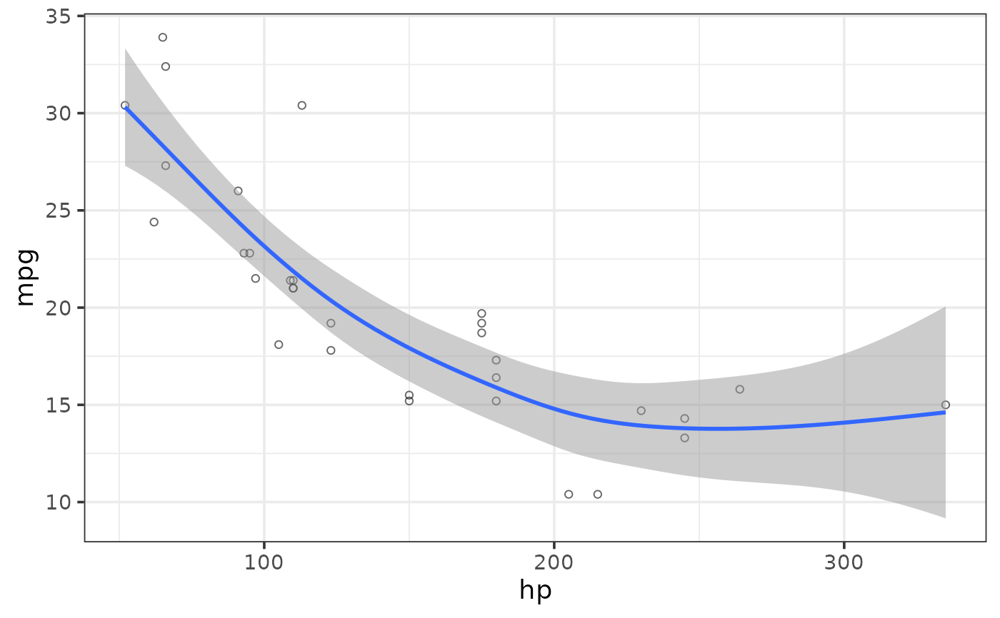

Easily generate scatterplots using ggplot2 with a simplified customization interface for common modifications with static (ggplot) and interactive (plotly) output options. The static output is useful for producing static reports (e.g. for manuscripts) and is readily customized further using ggplot2 syntax. The interactive output is helpful for exploring the data and producing dynamic html reports. See this blog post for an introduction to ggplot2.
plot_scatter( data, y, x, jitter = FALSE, shape = 21, ..., fill_var = NULL, colour_var = NULL, shape_var = NULL, size_var = NULL, ylab = NULL, xlab = NULL, title = NULL, title_hjust = 0.5, caption = NULL, caption_hjust = 0, fill_var_title = NULL, colour_var_title = NULL, shape_var_title = NULL, size_var_title = NULL, ylim = c(NA, NA), ybreaks = ggplot2::waiver(), transform_y = FALSE, y_transformation = "log10", y_var_labs = ggplot2::waiver(), xlim = c(NA, NA), xbreaks = ggplot2::waiver(), transform_x = FALSE, x_transformation = "log10", x_var_labs = ggplot2::waiver(), size_lim = c(NA, NA), transform_size = FALSE, size_transformation = "log10", fill_var_order = NULL, colour_var_order = NULL, shape_var_order = NULL, fill_var_labs = NULL, colour_var_labs = NULL, shape_var_labs = NULL, fill_var_values = NULL, colour_var_values = NULL, shape_var_values = NULL, palette = c("plasma", "C", "magma", "A", "inferno", "B", "viridis", "D", "cividis", "E"), palette_direction = c("d2l", "l2d"), palette_begin = 0, palette_end = 0.8, regression_line = FALSE, regression_method = "gam", regression_formula = NULL, regression_se = FALSE, ci_level = 0.95, regression_geom = "smooth", regression_line_size = 1, regression_line_colour = NULL, regression_alpha = 0.5, regression_line_type = 1, regression_line_full_range = FALSE, regression_method_args = NULL, loess_span = 0.75, alpha = 0.6, greyscale = FALSE, theme = c("classic", "bw", "grey", "light", "dark", "minimal"), text_size = 14, font = c("sans", "serif", "mono"), facet_var = NULL, facet_var_order = NULL, facet_var_labs = NULL, facet_var_strip_position = c("top", "bottom"), facet_var_text_bold = TRUE, legend_position = c("right", "left", "top", "bottom"), omit_legend = FALSE, interactive = FALSE, aesthetic_options = FALSE )
Arguments
| data | A data frame or tibble containing the dependent measure "y", the independent measure "x", and any grouping variables or covariates. |
|---|---|
| y | A numeric variable you want to plot against x (quoted or unquoted), e.g. y = "variable" or y = variable. |
| x | A numeric variable you want to plot against y (quoted or unquoted), e.g. x = "variable" or x = variable. |
| jitter | Set to TRUE to slightly offset overlapping points in random
directions. See |
| shape | Point shape to use. Default is 21 for "circle filled". Use the "aesthetic_options" argument to view the options. |
| ... | graphical parameters (not associated with variables) to be passed
to |
| fill_var | Use if you want to assign a variable to the point fill
colour, e.g. fill_var = "grouping_variable" or fill_var =
grouping_variable. Produces separate sets of points for each level of the
fill variable. See |
| colour_var | Use if you want to assign a variable to the point outline
colour, e.g. colour_var = "grouping_variable" or colour_var =
grouping_variable. Produces separate sets of points for each level of the
colour variable. See |
| shape_var | Use if you want to assign a variable to the point shape,
e.g. shape_var = "grouping_variable" or shape_var = grouping_variable.
Produces separate sets of points for each level of the shape variable. See
|
| size_var | Use if you want to assign a continuous variable to the point
size, e.g. size_var = "covariate" or size_var = covariate. Adjusts point
sizes according to the value of the covariate. See
|
| ylab | Specify/overwrite the y-axis label using a character string, e.g. "y-axis label" |
| xlab | Specify/overwrite the x-axis label using a character string, e.g. "x-axis label" |
| title | Add a main title to the plot using a character string, e.g. "scatterplot of y as a function of x" |
| title_hjust | Left-to-right/horizontal justification (alignment) of the main plot title. Accepts values from 0 (far left) to 1 (far right). Default is 0.5 (centre). |
| caption | Add a figure caption to the bottom of the plot using a character string. |
| caption_hjust | Left-to-right/horizontal justification (alignment) of the caption. Accepts values from 0 (far left) to 1 (far right). Default is 0 (left). |
| fill_var_title | If a variable has been assigned to fill using fill_var, this allows you to modify the variable label in the plot legend. |
| colour_var_title | If a variable has been assigned to colour using colour_var, this allows you to modify the variable label in the plot legend. |
| shape_var_title | If a variable has been assigned to shape using shape_var, this allows you to modify the variable label in the plot legend. |
| size_var_title | If a variable has been assigned to shape using shape_var, this allows you to modify the variable label in the plot legend. |
| ylim | specify the y-axis limits, e.g. ylim = c(lower_limit, upper_limit). Use NA for the existing minimum or maximum value of y, e.g. the default is ylim = c(NA, NA). |
| ybreaks | This allows you to change the break points to use for tick
marks on the y-axis. |
| transform_y | Would you like to transform the y axis? (TRUE or FALSE) |
| y_transformation | If transform_y = TRUE, this determines the
transformation to be applied. Common choices include "log10" (the default),
"log2", "sqrt", or "exp". See |
| y_var_labs | Allows you to modify the labels displayed with the y-axis
tick marks. See |
| xlim | specify the x-axis limits, e.g. xlim = c(lower_limit, upper_limit). Use NA for the existing minimum or maximum value of x, e.g. the default is xlim = c(NA, NA) |
| xbreaks | This allows you to change the break points to use for tick
marks on the x-axis. |
| transform_x | Would you like to transform the x axis? (TRUE or FALSE) |
| x_transformation | If transform_x = TRUE, this determines the
transformation to be applied. Common choices include "log10" (the default),
"log2", "sqrt", or "exp". See |
| x_var_labs | Allows you to modify the labels displayed with the x-axis
tick marks. See |
| size_lim | specify the size scale limits, e.g. size_lim = c(lower_limit, upper_limit). Use NA for the existing minimum or maximum value of x, e.g. the default is size_lim = c(NA, NA) |
| transform_size | Would you like to transform the size scale? (TRUE or FALSE) |
| size_transformation | If transform_size = TRUE, this determines the
transformation to be applied. Common choices include "log10" (the default),
"log2", "sqrt", or "exp". See |
| fill_var_order | If a variable has been assigned to fill using fill_var,
this allows you to modify the order of the variable groups, e.g. fill_var =
grouping_variable, fill_var_order = c("group_2", "group_1"). See
|
| colour_var_order | If a variable has been assigned to colour using
colour_var, this allows you to modify the order of the variable groups,
e.g. colour_var = grouping_variable, fill_var_order = c("group_2",
"group_1"). See |
| shape_var_order | If a variable has been assigned to shape using
shape_var, this allows you to modify the order of the variable groups,
e.g. shape_var = grouping_variable, shape_var_order = c("group_2",
"group_1"). See |
| fill_var_labs | If a variable has been assigned to fill using fill_var,
this allows you to modify the labels of the variable groups, e.g. fill_var
= grouping_variable, fill_var_labs = c("group_1_new_label" =
"group_1_old_label", "group_2_new_label" = "group_2_old_label"). See
|
| colour_var_labs | If a variable has been assigned to colour using
colour_var, this allows you to modify the labels of the variable groups,
e.g. colour_var = grouping_variable, colour_var_labs =
c("group_1_new_label" = "group_1_old_label", "group_2_new_label" =
"group_2_old_label"). See |
| shape_var_labs | If a variable has been assigned to shape using
shape_var, this allows you to modify the labels of the variable groups,
e.g. shape_var = grouping_variable, shape_var_labs =
c("group_1_new_label" = "group_1_old_label", "group_2_new_label" =
"group_2_old_label"). See |
| fill_var_values | If a variable has been assigned to fill using
fill_var, this allows you to modify the colours assigned to the fill of
each of the variable groups, e.g. fill_var = grouping_variable,
fill_var_values = c("blue", "red"). See
|
| colour_var_values | If a variable has been assigned to colour using
colour_var, this allows you to modify the colours assigned to the outline
of each of the variable groups, e.g. colour_var = grouping_variable,
colour_var_values = c("blue", "red"). See
|
| shape_var_values | If a variable has been assigned to shape using
shape_var, this allows you to modify the shapes assigned to each of the
variable groups, e.g. colour_var = grouping_variable, shape_var_values =
c(1, 2). See |
| palette | If a variable is assigned to fill_var or colour_var, this determines which viridis colour palette to use. Options include "plasma" or "C" (default), "magma" or "A", "inferno" or "B", "viridis" or "D", and "cividis" or "E". See this link for examples. You can override these colour palettes with fill_var_values or colour_var_values. |
| palette_direction | Choose "d2l" for dark to light (default) or "l2d" for light to dark. |
| palette_begin | Value between 0 and 1 that determines where along the
full range of the chosen colour palette's spectrum to begin sampling
colours. See |
| palette_end | Value between 0 and 1 that determines where along the full
range of the chosen colour palette's spectrum to end sampling colours. See
|
| regression_line | Set to TRUE if you want to add a regression line to the plot. |
| regression_method | This determines the type of regression line to use.
Common options are "lm", "loess", & "gam". "gam" is the default, which fits
a generalized additive model using a smoothing term for x. This method has
a longer run time, but typically provides a better fit to the data than
other options and uses an optimization algorithm to determine the optimal
wiggliness of the line. If the relationship between y and x is linear, the
output will be equivalent to fitting a linear model. See
|
| regression_formula | Specify a formula to use with the chosen regression
method, using the formula() interface. see
|
| regression_se | Add a confidence envelope for the regression line? (TRUE or FALSE) |
| ci_level | Confidence level for the regression_line confidence envelope. Default is 0.95. |
| regression_geom | Not typically modified. See
|
| regression_line_size | Adjusts the thickness/size of regression lines |
| regression_line_colour | Adjusts the colour of regression lines |
| regression_alpha | Adjusts the transparency of the regression confidence envelope. |
| regression_line_type | Adjusts the line type of regression lines, e.g. "solid", "dashed", etc. |
| regression_line_full_range | Set to TRUE if you want regression lines to extend beyond the limits of the data to cover the full range of the plot. |
| regression_method_args | Additional arguments you would like passed to
the regression_method modelling function, see method.args in
|
| loess_span | Affects the wiggliness of the loess regression line. See
|
| alpha | This adjusts the transparency/opacity of the graphical components of the plot, ranging from 0 = 100% transparent to 1 = 100% opaque. |
| greyscale | Set to TRUE if you want the plot converted to greyscale. |
| theme | Adjusts the theme using 1 of 6 predefined "complete" theme
templates provided by ggplot2. Currently supported options are: "classic"
(the elucidate default), "bw", "grey" (the ggplot2 default), "light",
"dark", & "minimal". See |
| text_size | This controls the size of all plot text. Default = 14. |
| font | This controls the font of all plot text. Default = "sans" (Arial). Other options include "serif" (Times New Roman) and "mono" (Courier New). |
| facet_var | Use if you want separate plots for each level of a grouping
variable (i.e. a faceted plot), e.g. facet_var = "grouping_variable" or
facet_var = grouping_variable. See |
| facet_var_order | If a variable has been assigned for faceting using
facet_var, this allows you to modify the order of the variable groups, e.g.
facet_var = grouping_variable, facet_var_order = c("group_2", "group_1").
See |
| facet_var_labs | If a variable has been assigned for faceting using
facet_var, this allows you to modify the labels of the variable groups
which will appear in the facet strips, e.g. facet_var = grouping_variable,
facet_var_labs = c("group_1_new_label" = "group_1_old_label",
"group_2_new_label" = "group_2_old_label"). See
|
| facet_var_strip_position | If a variable has been assigned for faceting using facet_var, this allows you to modify the position of the facet strip labels. Sensible options include "top" (the default) or "bottom". |
| facet_var_text_bold | If a variable has been assigned for faceting using facet_var, this allows you to use boldface (TRUE/default or FALSE) for the facet strip label text. |
| legend_position | This allows you to modify the legend position. Options include "right" (the default), "left", "top", & "bottom". |
| omit_legend | Set to TRUE if you want to remove/omit the legends. |
| interactive | Determines whether a static ggplot object or an interactive html
plotly object is returned. See |
| aesthetic_options | If set to TRUE, opens a web browser to the tidyverse online aesthetic options vignette. |
Value
A ggplot object or plotly object depending on whether static or interactive output was requested.
References
Wickham, H. (2016). ggplot2: elegant graphics for data analysis. New York, N.Y.: Springer-Verlag.
See also
Author
Craig P. Hutton, craig.hutton@gov.bc.ca
Examples
# \donttest{ plot_scatter(mtcars, y = mpg, x = hp)plot_scatter(mtcars, y = mpg, x = hp, fill_var = cyl)plot_scatter(mtcars, y = mpg, x = hp, fill_var = cyl, shape = 21, size = 2)plot_scatter(mtcars, y = mpg, x = hp, colour_var = cyl, shape_var = am, size = 4)plot_scatter(mtcars, y = mpg, x = hp, colour = "blue", shape_var_labs = c("manual" = "0", "automatic" = "1"), shape_var = am, theme = "bw")#map colour, shape, and size to different variables plot_scatter(mtcars, y = mpg, x = hp, colour_var = cyl, shape_var = am, size_var = wt)#map colour and shape to a common variable plot_scatter(mtcars, y = mpg, x = hp, shape_var = cyl, colour_var = cyl)#add a regression line #linear plot_scatter(mtcars, y = mpg, x = hp, regression_line = TRUE, regression_method = "lm")#change the regression line colour plot_scatter(mtcars, y = mpg, x = hp, regression_line = TRUE, regression_method = "lm", regression_line_colour = "green")#add standard error envelope plot_scatter(mtcars, y = mpg, x = hp, regression_line = TRUE, regression_method = "lm", regression_se = TRUE)#adjust standard error envelope transparency plot_scatter(mtcars, y = mpg, x = hp, regression_line = TRUE, regression_method = "lm", regression_se = TRUE, regression_alpha = 0.8) #default is 0.5#split by a grouping variable plot_scatter(mtcars, y = mpg, x = hp, colour_var = cyl, regression_line = TRUE, regression_method = "lm")#fit a polynomial regression line by specifying a regression_formula = formula() plot_scatter(mtcars, y = mpg, x = hp, regression_line = TRUE, regression_method = "lm", regression_se = TRUE, regression_formula = y ~ poly(x, 2))plot_scatter(mtcars, y = mpg, x = hp, shape_var = cyl, colour_var = cyl, regression_line = TRUE, regression_method = "lm", regression_formula = y ~ poly(x, 3))#fit a non-linear regression line using locally(-weighted) scatterplot smoothing (loess) plot_scatter(mtcars, y = mpg, x = hp, regression_line = TRUE, regression_se = TRUE, regression_method = "loess")#fit a non-linear regression line using locally(-weighted) scatterplot smoothing (loess) #& also adjust the span (default = 0.75). #This controls how much of the data is used for the weighted smoothing. plot_scatter(mtcars, y = mpg, x = hp, regression_line = TRUE, regression_se = TRUE, regression_method = "loess", loess_span = 0.3)#fit a non-linear regression line using a generalized additive model (gam), the default plot_scatter(mtcars, y = mpg, x = hp, regression_line = TRUE, regression_se = TRUE, regression_method = "gam")#use a dashed regression line instead plot_scatter(mtcars, y = mpg, x = hp, regression_line = TRUE, regression_se = TRUE, regression_line_type = "dashed")#more complex example with overplotting plot_scatter(pdata, y = y1, x = d, colour_var = g, regression_line = TRUE)#option 1 for dealing with overplotting: add jittering to offset overlappping points plot_scatter(pdata, y = y1, x = d, colour_var = g, jitter = TRUE, regression_line = TRUE)#option 2: make overlapping values more transparent plot_scatter(pdata, y = y1, x = d, colour_var = g, alpha = 0.2, regression_line = TRUE)#option 3: do both and make it interactive plot_scatter(pdata, y = y1, x = d, colour_var = g, jitter = TRUE, alpha = 0.2, regression_line = TRUE, interactive = TRUE) #add a faceting variable plot_scatter(pdata, y = y1, x = d, colour = "black", shape = 21, fill = "green4", jitter = TRUE, size = 4, alpha = 0.1, regression_line = TRUE, regression_se = TRUE, facet_var = g, ylab = "outcome", theme = "bw")# }